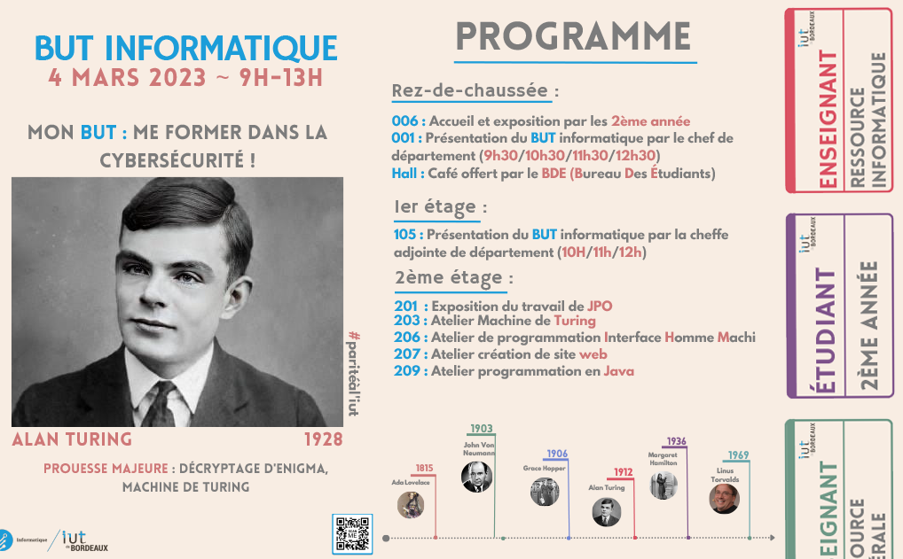

Campagne d'affichage de la JPO
Le but était de créer une campagne d'affichage composée d'affiches, d'un plan, de signalisation, de badges et d'un programme
Information sur le projet
- Catégorie : Graphisme
- Logiciel : Canva / Photoshop
- Date : Mars 2023
- Taille d'équipe : À trois

Description du projet
Le projet consistait à créer une campagne d'affichage complète, regroupant différents éléments tels que des affiches, un plan, de la signalisation, des badges et un programme. J'ai été chargé de concevoir la charte graphique du projet et de proposer l'idée de créer plusieurs variantes mettant en avant des informaticiens et informaticiennes connus, tels que Margaret Hamilton ou John von Neumann. Cette initiative m'a permis d'améliorer ma maîtrise d'outils de design tels que photoshop ou canva.